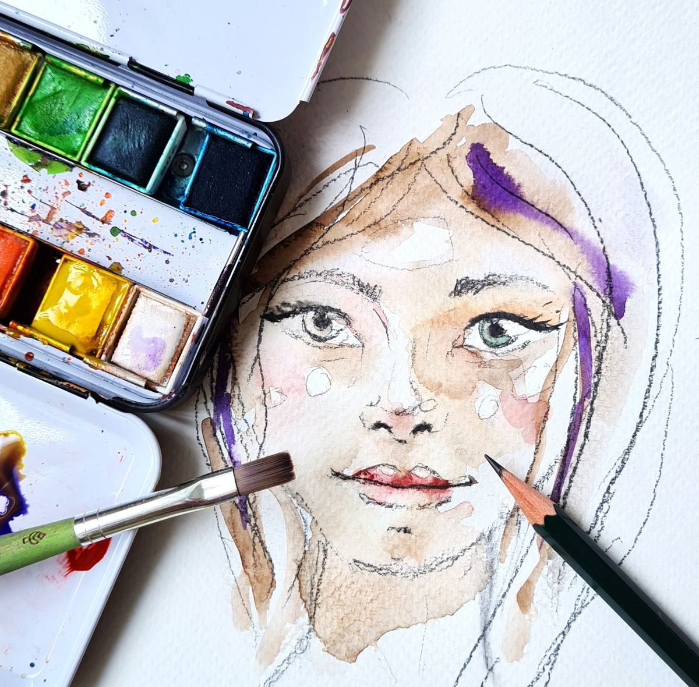
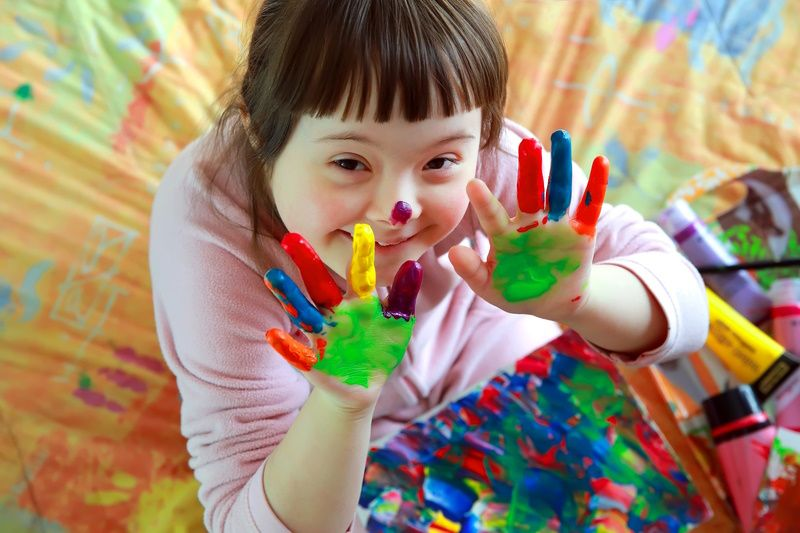
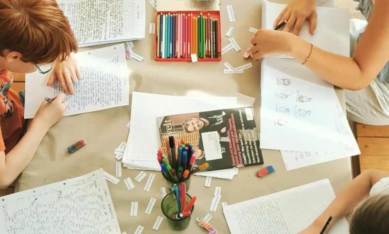
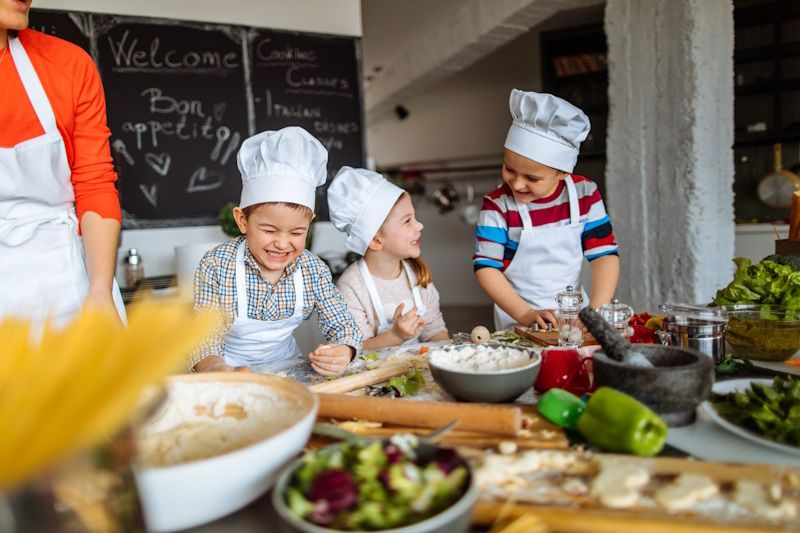

Start / Kreativangebote
Kreativangebote
Malen, schreiben, kochen: in kleinen Gruppen, ohne Vorgaben und ohne Bewertung. Bei uns in Wedel, nahe am Bahnhof.


Kreativ-Raum
Freies künstlerisches Gestalten für Kinder und Jugendliche
Malen, zeichnen, schreiben, basteln und plastisch gestalten: ohne Vorgaben und Bewertungen, in kleiner Gruppe. Mit Aquarellfarbe, Modelliermasse und Ölkreiden setzen die Kinder eigene Ideen um und kommen mit Gleichaltrigen ins Gespräch.
- Wann
- Donnerstags, 15:00 bis 16:30 Uhr, außer in den Ferien. Ein weiterer Kurs dienstags, 16:00 bis 17:30 Uhr, ist in Planung: melden Sie sich gern bei Interesse.
- Für wen
- Kinder und Jugendliche von 6 bis 17 Jahren
- Kosten
- 50 € pro Monat, Material inklusive
- Anmeldung
- [Platzhalter Telefonnummer] · per E-Mail oder direkt im Kreativ-Raum

Schreibwerkstatt
Pausiert, Anmeldung jederzeit möglichEigene Geschichten in einem eigenen Buch
Ob Comic, Kurzgeschichte oder Roman: Hier halten Kinder und Jugendliche ihre Ideen, Geschichten und Bilder fest und entdecken ihre Talente. Willkommen ist jede und jeder mit Freude am Schreiben, Anfänger und Fortgeschrittene lernen voneinander. Eine erfahrene Autorin leitet die Gruppe.
- Wann
- Der Kurs startet wieder, sobald sich mindestens 5 Teilnehmende angemeldet haben.
- Für wen
- Kinder und Jugendliche
- Kosten
- 50 € pro Monat
- Anmeldung
- [Platzhalter Telefonnummer] · per E-Mail

Kinder-Kochstube
Gemeinsam kochen, probieren und Neues entdecken.
- Wann
- Montags, 14 bis 16 Uhr (Stand 2024)
- Wo
- Rosengarten 8, 22880 Wedel
Zur Abstimmung: Gibt es die Kochstube noch, und ist sie das dritte Kreativangebot? Auf der alten Seite stehen nur Termine von 2024. Alternativ kommen hier die Ferienkurse hin.
Für alle Kurse
Diese Infos gelten für jedes Kreativangebot. Wir haben sie hier gebündelt, damit sie nicht auf jeder Seite einzeln stehen.
- Erste Stunde kostenlosJedes Kind kann in einer Schnupperstunde reinschnuppern.
- Bildungskarte Kreis PinnebergDie Kurse können über die Bildungskarte bezuschusst werden. Bei einem Pflegegrad gibt es weitere Finanzierungsmöglichkeiten, fragen Sie uns gern.
- OrtASSISTENTIUM, Rosengarten 8, 22880 Wedel, nahe Bahnhof Wedel